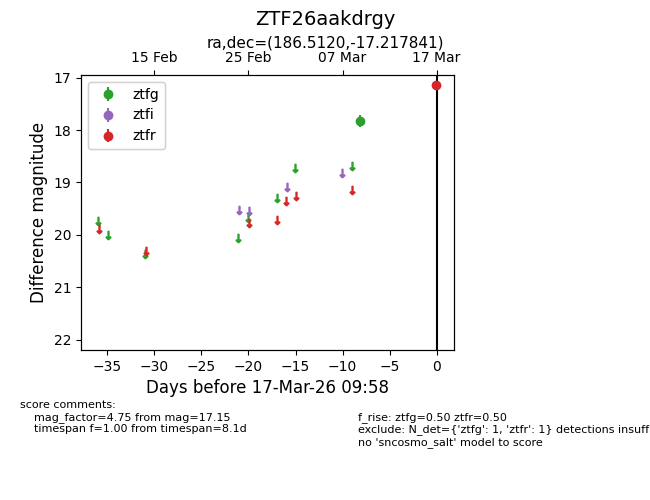
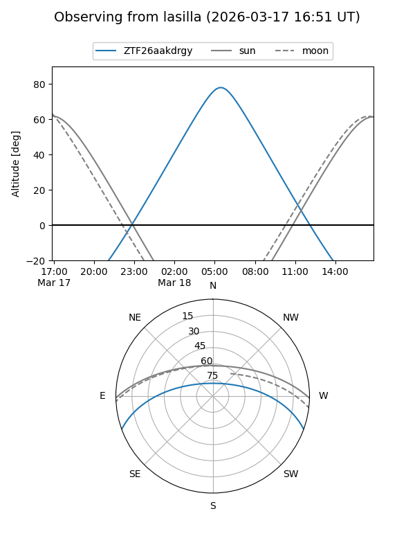
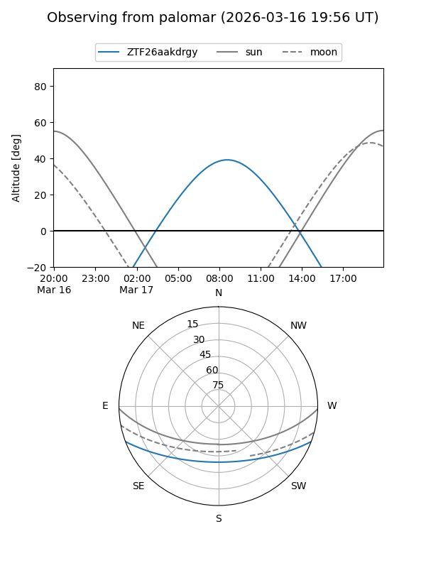

ZTF26aakdrgy
Target ZTF26aakdrgy at 2026-03-17 10:00
Aliases and brokers:
FINK: link
Lasair: link
ALeRCE: link
alt names
ZTF26aakdrgy (ztf,fink_ztf)
Coordinates:
equatorial (ra, dec) = 186.5120,-17.21784
equatorial (HMS+DMS) = 12:26:02.88,-17:13:04.23
galactic (l, b) = (294.3082,+45.22834)
Flags:
Photometry:
last ztfg=17.83, ztfr=17.15
1 ztfg, 1 ztfr detections
Lightcurve

Visibility


Additional plots